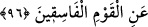

ehlinden olmaları, kendilerinden kaçınılmasını gerekli kılan sebeplerden, onların
ayıplama ve kınama yoluyla ıslah olmalarını beklemekten vazgeçmeyi gerektiren
hususlardandır. Onlar dünyada kazandıkları çeşitli günahlar sebebiyle mutlaka
cezalandırılacaklardır.
96. Size yemin ediyorlar ki kendilerinden râzı olasınız. Siz onlardan râzı olsanız
bile Allah, fâsık topluluktan râzı olmaz.
“Size” gelip Allah’a “yemin ediyorlar ki” yalan yeminleri sayesinde “kendilerinden
râzı olasanız” ve onlara yaptığınız eski muameleye devam edesiniz. “Siz onlardan râzı
olsanız bile Allah, fâsık topluluktan”, küfürde inat etmeye devam edenlerden “razı
olmaz.” Çünkü sizin râzı olmanız Allah’ın râzı olmasını gerektirmez. O münâfıklar
Allah’ın kendilerine gazab ve azab edeceği kimseler zümresinde bulundukları sürece
tek başına sizin râzı olmanız onlara hiçbir fayda vermez.
Âyetten maksad muhatapları münâfıklara rıza göstermekten ve öne sürdükleri yalan
mazeretlerine aldanmaktan çok güçlü ve etkili bir şekilde nehyetmektir. Çünkü Allah
Teâlâ’nın râzı olmadığı bir kimseden râzı olmak, bir müminden hemen hemen hiç sâdır
olmaması gereken bir husustur. Nitekim el-İrşâd’da böyle geçmektedir.
Rivayet edildiğine göre Hz. Peygamber (a.s.), Tebük seferinden dönüp Medine’ye
geldiğinde: “Onlarla (münâfıklarla) oturmayın ve konuşmayın!”[245] buyurmuştur. Bu
hadis de göstermektedir ki tevbe edinceye kadar münâfıkları ve günahta ısrar edenleri
terk etmek, onlardan uzak durmak gerekir.
Muhammed Bâkır (r.a.) demiştir ki: “Babam Zeynelâbidîn (rh.a.) bana tavsiyede
bulunup şunları söyledi: “Şu beş sınıf insanla dostluk kurma, komşuluk etme ve onlarla
yola çıkma:
1. Fâsıkla dostluk kurma. Çünkü seni bir lokma ekmeğe ve hatta daha basitine satar.
Ben “Babacığım! “Daha basiti nedir ki?” diye sorunca: “Bir lokma ekmeğe tamah eder,
sonra da onu elde edemez.” dedi.
2. Cimriyle dost olma. Çünkü, en çok ihtiyacın olan şeyi bile senden esirger.
3. Yalancıyla dost olma. Çünkü o serap gibidir. Sana, yakın olanı uzak, uzak olanı da
yakın gösterir.
4. Ahmakla dost olma. Çünkü, sana fayda vereyim derken zarar verir. Nitekim, “Akıllı
düşman, ahmak dosttan daha hayırlıdır.” diye bir söz vardır.
5. Akrabasıyla ilişkisini kesen (sıla-i rahmi terk eden) kimseyle de dost olma. Çünkü